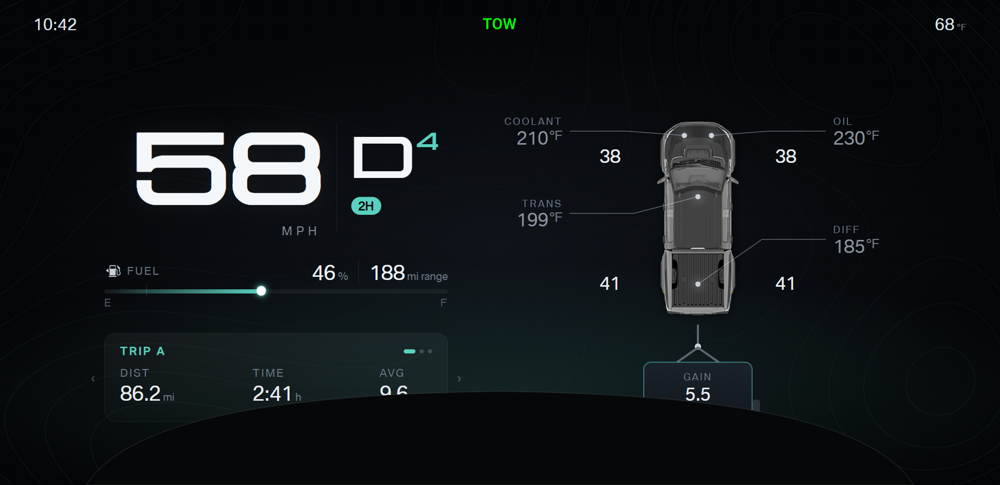

F150 cluster · Design round 4
Round 2 look with round 3 priorities. Speed and gear are the hero. Fuel, temperatures, and tires are gauges whose shape and colour show the state.
Less-used data moves to a paged card. Sample values only.
- Paged card: the steering wheel left and right keys change the page, as the stock layouts do with
drivingInfoIndex.
Daily pages: trip, fuel economy, tires, temperatures, vehicle. Towing pages: trailer, trip, fuel economy, vehicle. Add ?page=1 and so on to preview a page.
- Alerts: one place on every layout, a banner top center under the telltales, next to the light that raised the alert.
The card keeps showing the current page. A red warning pulses once when the banner appears. The banner covers the cruise readout while active.
- Quiet normal state: normal temperatures show dim values, icons, and fills. A warm, hot, or cold reading returns to full colour, so a change stands out without reading numbers.
- No data: a reading the truck stops sending (or 0xFF) shows "--" with no gauge fill, never the last value. The timeout length is integration work.
- Speed digits sit in fixed-width cells, so the number never shifts sideways as the value changes.
- Cruise: on Daily A, a marker on the speed crescent shows the set speed. Daily B and Towing have no speed gauge and keep the top-center cruise readout.
- Night: add
?night=1. Whites drop to about 75 % and the floor glow halves when the headlights are on (firmware ill). Warning colours stay full.
- RPM: every RPM gauge reads one redline value (
REDLINE in kit4.js: 6000 for the 3.5 EcoBoost. Ford publishes no tach redline; owner reports put the stock
tach marking at 5,800 to 6,200 and the rev limiter near 6,500. Check against the original Ford cluster face.) and the firmware scale tachoSpeedMax (6000 or 7000).
- Temperatures show real °F from
waterTemp, gearBoxTemp, oilTemp, and diffOilTemp. Colour: blue cold, white normal, amber warm, red hot. A reading the truck does not send stays hidden.
- Background glow: the floor glow turns amber when any temperature is warm or the range drops to 50 miles. The glow turns red when any temperature is hot or the truck low-fuel light (alarm 151) comes on. Other alerts leave the glow alone.
- Fuel warning by range: the fuel gauge turns amber at 50 miles to empty, and the gauge marker shows where that point falls at the current economy. 50 miles is a design value.
- Colour: every layout shares one accent palette, teal by default. See the accent setting in round 5.
- Usable area: the steering column shroud hides an arch at the bottom center of the screen, traced from a photo of the installed cluster.
Every preview draws the arch in black. Content stays at least 20 px clear of the arch, and the bottom corners stay usable.
The floor glow rises from the arch top so the glow stays visible. Add
?bezel=0 to hide the arch.
Each capture run checks every element against the arch and reports any overlap.
- Turn signals: green light along the screen edge only, no arrow. Telltales and cruise stay top center. Top corners hold only clock and outside temperature. No mode label: the TOW light and the automatic layout switch already show towing.
| Reading | Cold below | Warm from | Hot from |
|---|
| Coolant | 140 °F | 226 °F | 235 °F (also firmware waterLevel 1 / 2) |
| Transmission | 104 °F | 232 °F | 250 °F |
| Engine oil | 158 °F (firmware) | 259 °F | 277 °F |
| Rear diff | 120 °F (firmware) | 232 °F | 268 °F |
Limits not marked "firmware" are design values until checked against the truck.
Daily · pick A or B
Daily: keep both. A and B become two separate layouts.
Towing · pick A or B
A · Rig: truck from above, tire pressures at the wheels, temperatures at their parts

Towing: hybrid of A and B, see
round 5. A and B keep the layout from before the shroud check.
True-size check
Open a physical preview with the ruler, for example towing B physical.
Resize the window until the orange bar measures 100 mm, then look from your driving distance.